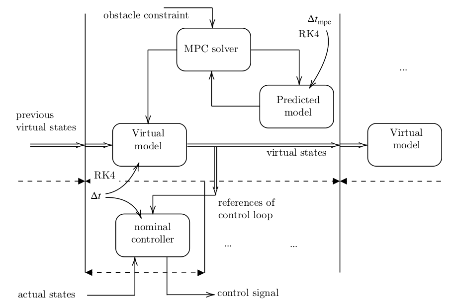
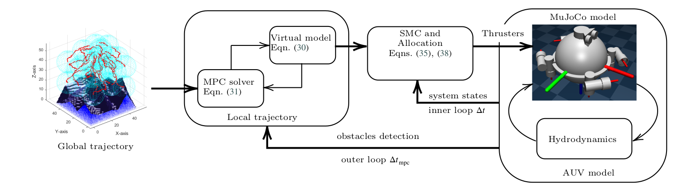

abstract
This paper presents a comprehensive framework for glocal trajectory generation with real-time tracking control for a group of Autonomous Underwater Vehicles (AUVs) equipped with distributed sensors. A two-stage approach is proposed to maximize the underwater area coverage of sensor systems while ensuring network connectivity between AUVs and free collision with terrains and floating obstacles. At the global level, a heuristic algorithm named Global Trajectory to Maximize Coverage (GT-MC) is introduced, which generate trajectory to optimize the final AUVs distribution. After that, the trajectory is further optimized to produce the final set of waypoints for the AUVs group. At the local level, a safety-critical trajectory generation method is developed by using a Model Predictive Control (MPC) scheme for a virtual AUV system with Control Barrier Functions (CBF) as constraints for floating obstacle avoidance. The generated trajectories are tracked by the actual AUVs using a classical Sliding Mode Controller (SMC) combined with a thruster force allocation optimizer for the robustness. The complete framework is validated via simulation studies using an open-source advanced physics tool called MuJoCo. The suggested methodology can facilitate the autonomy, scalability, and safety of sensor-AUVs distribution missions, making it a promising tool for intelligent marine sensing and monitoring.global path generation algorithm


Motivated by limitation of global trajectory methods that mentioned in Table 1,an iterative approach called Global Trajectory - Maximize Coverage (GT-MC) is introduced to find a trajectory that meets the final coverage optimized distribution. The suggested trajectory is a list of waypoints that satisfy constraints of connectivity, maximum velocity and safety distance between AUVs themselves as well as between AUVs and terrain obstacles. Then, as the obtained trajectory only satisfies the target and constraints of final coverage optimization, it is further refined using a re-optimizing scheme. The sub-optimal trajectory will go through a Sequential Distance-based Merging phase (SDM) to delete unnecessary waypoints and then Tail Redundancy Trimming phase (TRT) to cut off the repeated waypoints. In consequence, the trajectory meets the global trajectory optimizing goal and constraints, resulting in the final optimal set of waypoints.
local path generation architecture
Block diagram of the MPC-CBF framework for obstacle avoidance with virtual model-based prediction. The predicted model is integrated using RK4 over the MPC horizon \(\Delta t_{\mathrm{mpc}}\) to compute future virtual states while considering obstacle constraints. The MPC solver generates reference trajectories that are fed into a nominal controller, which operates over a smaller control loop interval \(\Delta t\).
simulation setup
Overview of the hierarchical control architecture for AUV navigation. The global path is generated offline and provided as a reference to the MPC solver for local path planning, which operates in the outer loop. A virtual model is used to predict a new reference trajectory. Then, it is passed to a Sliding Mode Controller (SMC) and a force allocation block running in the inner control loop. The control signal is applied to the MuJoCo-based AUV model, which includes hydrodynamic effects.

citation
@misc{vu2025glocal,
title={Glocal Trajectories Generation with Tracking Control for Integrated-Sensors AUVs Distribution},
author={Vu, Duc Cuong and Tran, Son and Nguyen, Tung Lam and Hoang, Duc Chinh},
year={2025},
howpublished={\url{https://github.com/dc-vu/AUV-ODIN-mujoco}},
note={Accessed: 2025-05-16}
}